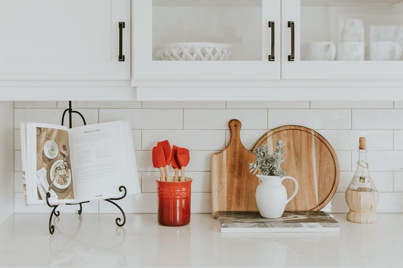

Meal planning made easy!
Meals are grouped into choices for each day. Choose a meal from each category to make a weekly meal plan.
If you want a quick solution, simply click the random meal plan generator to generate a weeks worth of meals. If there is anything that you don't want to eat in the meal plan, either re-generate a new random plan, or change out individual meals for something different.
Freeze any leftovers to eat on the weekend or for easy grab-and-go lunches.
Generate a grocery list of the ingredients you will need.